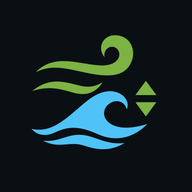

Wind
Current
Water
Surf
≡
HRDPS 2.5 km
Sustained
Gusts
Waves
Temp
Animated flow lines
Observed wind (stations)
Correct forecast with live stations
Tide heights (zoom in)
Tidal current stations
Seamarks (OpenSeaMap)
Forecast grid
Observations
Tide & current stations
⌂
➤
⟳
▶
—
Wind at map centre
Now

Install BC Sail
Full-screen app on your home screen, works with patchy signal.
Install
✕